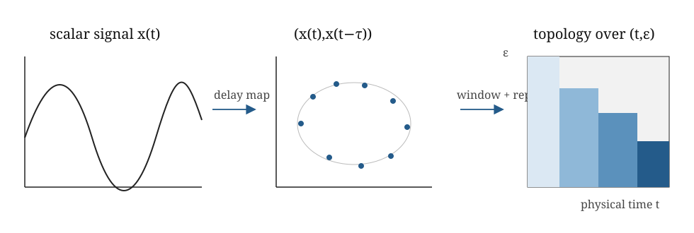

Week 7: Repeated persistence through time
Topaz, Ziegelmeier and Halverson introduce CROCKER plots for biological aggregation models (Topaz et al. 2015). Xian and collaborators review topological summaries for time-varying data and extend CROCKER plots to CROCKER stacks (Xian et al. 2022). Perea and Harer introduce SW1PerS for periodicity in sliding-window point clouds (Perea and Harer 2015). These papers are optional. The core page develops repeated persistence; SW1PerS and multiparameter persistence are separated into optional subtopics.
Where this week sits. Ordinary persistence follows structure through filtration scale. Week 7 introduces the honest dynamic baseline: compute that ordinary persistence separately for each physical time or time window, then treat the diagrams or summaries as a time series. No cross-time feature identity has yet been created.
Learning goals
By the end of this week, you should be able to:
- explain repeated or framewise persistence as ordinary persistence applied separately along physical time;
- keep physical time, filtration scale and any delay-coordinate parameters distinct when reading a dynamic TDA analysis;
- read a CROCKER-style summary and connect a slice of it back to the corresponding framewise Betti information;
- state precisely why similar features in consecutive persistence diagrams have not thereby acquired a tracked identity; and
- recognise when SW1PerS or multiparameter persistence addresses a different question from repeated persistence.
Mathematics and summaries
What is the object at each time?
Several kinds of observations can be repeated through time. The notation is a compact menu, not a list of objects that was previously defined as one family:
| Symbol | Object available at time \(t\) | Typical source |
|---|---|---|
| \(X_t\) | metric point cloud | agent positions or a window of state vectors |
| \(G_t\) | graph | a changing interaction or contact network |
| \(I_t\) | image or gridded scalar field | density, activity or spatial concentration |
| \(W_t\) | sliding-window point cloud | delay vectors made from a signal near time \(t\) |
| \(K_{\bullet,t}\) | a complete filtration at fixed \(t\) | complexes \(K_{\varepsilon,t}\) across scale \(\varepsilon\) |
For example, a moving swarm supplies point clouds \(X_t\). Choosing a Rips construction at each frame produces \(K_{\varepsilon,t}\), and homology produces a diagram \(D_t\). The complete chain is
\[ \text{observation at }t \longrightarrow K_{\varepsilon,t} \longrightarrow H_p(K_{\varepsilon,t}) \longrightarrow D_t. \]
The same notation does not imply that \(X_t\subseteq X_{t+1}\) or that a map between consecutive frames exists.
From a time series to a state-space cloud
The lecture walkthrough follows a time series through delay coordinates, framewise persistence and a CROCKER-style display. The participant practical asks you to vary a representation choice while keeping physical time distinct from filtration scale.
For a scalar observation \(x(t)\), a delay-coordinate representation is
\[ \Phi_{m,\tau}(t)= \bigl(x(t),x(t-\tau),\ldots,x(t-(m-1)\tau)\bigr). \]
The lag \(\tau\), embedding dimension \(m\), sampling interval and window length are upstream modelling choices. Treating the resulting vectors as a point cloud usually discards their temporal ordering unless time is retained separately. Sampling speed also changes point density: slow passage through a region can create many nearby points without creating a new invariant set.
For multivariate observations, the measured state vector may already be a usable representation, but coordinate scaling, periodic variables and unobserved state still require attention.

This is not genuinely dynamic topology in the strongest sense because no method has identified a specific feature across time. It is repeated static persistence.
◇ Object check. At each time \(t\), there may be a complete ordinary persistence module \(V_t\) and its diagram \(D_t\). What is absent is a coherent family of maps connecting \(V_s\) to \(V_t\). A time series of diagrams is therefore not yet a vineyard module.
Useful outputs include
framewise diagrams;
sliding-window diagrams;
Betti curves through scale;
Betti summaries through physical time;
diagram distances to a baseline;
CROCKER-style plots, which project repeated persistence into a rank-function-like summary across scale and time.
Writing \(D_t\) for the diagram at physical time \(t\), a CROCKER-style surface records
\[ C_p(t,\varepsilon)=\#\{(b,d)\in D_t^{(p)}:b\leq\varepsilon<d\}. \]
This is the framewise Betti number across a two-dimensional display. It can reveal regimes and transitions, but it does not connect a class at time \(s\) to a class at time \(t\).
CROCKER stands for Contour Realization Of Computed \(k\)-dimensional hole Evolution in the Rips complex. The construction was introduced by Topaz, Ziegelmeier and Halverson for biological aggregation models (Topaz et al. 2015). One vertical slice is the Betti curve of one frame; one horizontal slice shows how the number of features alive at a chosen scale changes with physical time. A contour or heat map makes regimes visible, but forgets birth-death pairing and feature identity. CROCKER stacks add a persistence threshold so that short bars can be suppressed (Xian et al. 2022).
Window length is part of the observation model. Short windows may be undersampled; long windows can mix regimes and turn temporal change into apparent spatial structure.
A topological summary can change through time without any individual hole being tracked through time.
Optional subtopics
The following routes use persistence for related but different questions. Their high-level ideas are useful; their detailed development can be skipped unless they match the participant’s data.
SW1PerS and periodicity
Sliding-window coordinates turn a scalar signal into a point cloud. A persistent loop can quantify repeated traversal of one periodic phase cycle. This is a periodicity method, not a way to track a class across changing frames.
Multiparameter persistence
A genuine bifiltration retains two jointly ordered construction parameters. It requires compatible inclusions in both directions; merely plotting physical time against filtration scale is not enough.
What Week 7 adds
The core method describes how static topological summaries change through physical time. It is often the honest first dynamic analysis. The optional subtopics answer different questions and should be selected only when their additional structure is scientifically needed.